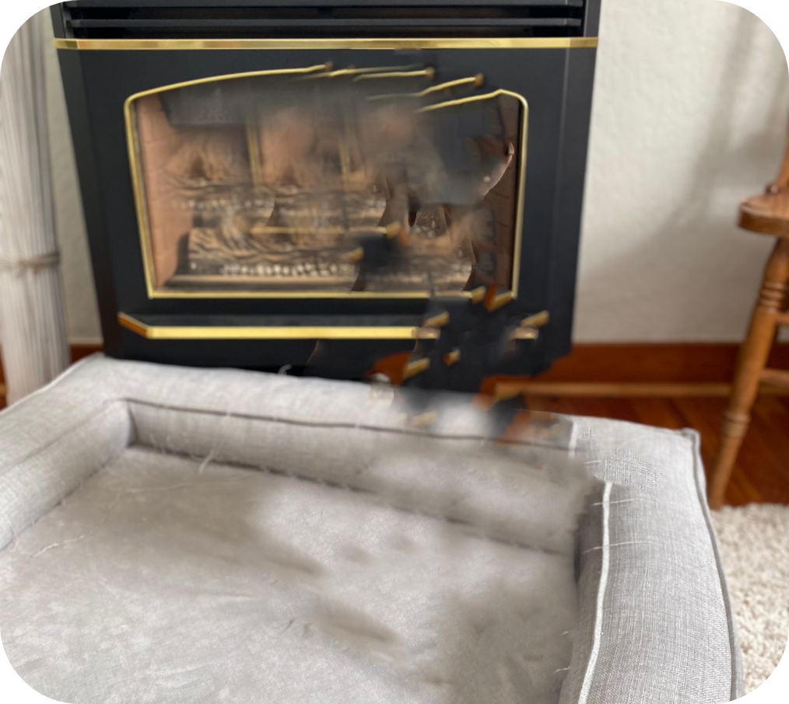
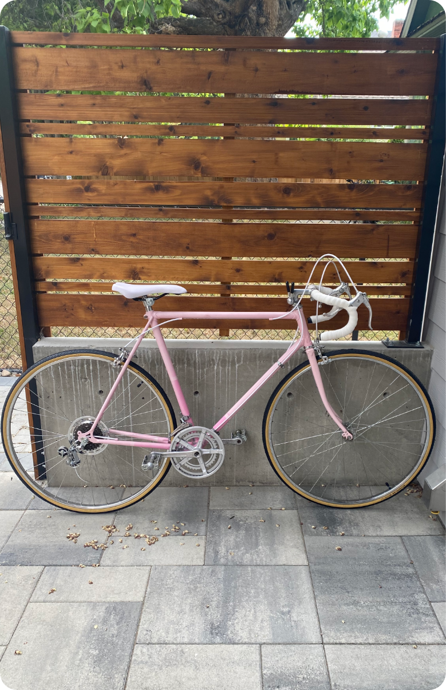

This
Is
Jupyter
Thesis
Biochemistry
Today, an estimated 600,000 people in Canada are living with Alzheimer’s disease (AD), with an expected
66% increase in the next 15 years, making it one of the most prevalent diseases in modern medicine. New
advancements in neurobiology are focusing on the role of glial cells in synaptic elimination within the
brain. The intimate connection that has been shown between astrocytes and the neuronal synapse has sparked
an investigation into their ability to communicate via calcium signalling: a process necessary in
maintaining healthy synapses. The influx of calcium in astrocytes is triggered by the specific binding of
glutamate to ionotropic glutamic acid receptors known as kainite receptors (iGluKs). This subset of
receptors has been found to be located on both the postsynaptic terminal of neurons and astrocytes, making
it an ideal target to elucidate the effects of calcium in synaptic elimination. Current methods are
insufficient, as they do not allow for investigation of the receptors within live cells, thus a robust
method of monitoring and controlling iGluKs should be investigated. To accomplish this, our lab has
designed a chemical probe with fluorescent tag Pacific Blue to mimic the native iGluK ligand. Through
electrophysiological techniques, the genetically modified cells were to be tested with glutamate and
Kainic acid to produce an effective concentration that would activate 50% of the receptors found on the
cell’s membrane. Overall, it was found that the EGFP could remain in the cytosol as iGluR6 incorporated
into the plasma membrane. Primary antibody fluorescence was detected in transfected cells and absent in
non-transfected cells, confirming that the cells could incorporate the new genetic material successfully.
The glowing cells found in the upper window are an example of human embryonic kidney cells that have been
successfully genetically modified to include our fluorescent receptor.
The video set below includes me in the lab, performing patch clamp electrophysiology experiments on a single Genetically modified cell.
The video set below includes me in the lab, performing patch clamp electrophysiology experiments on a single Genetically modified cell.
Dish’D is a foodie inspired UI that allows users to come together to share the food they love, with the people
that will appreciate them. This UI is meant to express a fun and inclusive environment for all users! You can
find more information below.
Dish’d
Following an HTA built to model the flow an organizer would take to schedule a movie with any number of
friends. FLIX allows the user to preview trailers of new movies playing in theatre now. Users can add friends
and plan events for future movies from trailers they see on the main screen. You can find more information
including the Xd file using the links below!
FLIX
Xd
Adobe
TikTok
Misinformation Classifier
With the increase spread of damaging misinformation in the wake of both the Covid-19 pandemic and the
conflict in Ukraine many countries are taking to social media to stop the spread. In this project we use a
combination of natural language processing and binary classification to determine the intent of the post
from data like description, hashtags and popularity found on a user’s TikTok post. The goal was to develop a
novel approach to speed the process of identifying posts for removal, in order to create a safer platform
for everyone.
The Stack OverFlow topic predictor and analysis is a project devoted to better characterizing the questions
and answers contributors make on the website. The goal was to establish the main types of questions asked from
a sample of over 20,000 elements provided by the Stack OverFlow API. We implemented a front end user interface
to allow a user to enter a question and then receive the topics the system generates from the answer. This
project highlights advanced techniques in natural language processing and machine learning using a Python
framework.

Stack OverFlow
Analysis & Topic Predictor

BrainYard
BrainYard is a full-stack website that is intended to help build a free and sustainable wealth of knowledge by
rewarding those that contribute. The intent of the project was to provide user’s with cryptocurrency for
generating a correct response to another’s question. These answers are subject to voting for correctness by
the community of users on the platform. The website features a SQL database that holds user’s contributions on
the platform including their current wallet totals. The Yard helps user’s build credit and currency to help
support them within their learning journey.
Projects
Projects

Skills

About
Me
I grew up thinking I’d become a doctor; playing with my miniature stethoscope while examining my mother’s arm,
memorizing every detail of the periodic table, in hopes of becoming Dr. Joseph Gaspari.
Many of my high school goals were geared toward making my childhood dreams come true. With a major entrance scholarship in hand, I began my Biochemistry studies at UBC Okanagan. Almost immediately I learned that clinical medicine wasn’t for me, so I took the path of medical research.
Fast forward to my fourth year where I took on an Honours project, working to validate a chemical probe used to track the effects of glutamic acid on Alzheimer’s patients. As part of my work, I was to perform electrophysiology experiments on Human embryonic kidney cells to validate our chemical probe. This was a major contribution to the group’s overall goal.
My biggest takeaways from this degree? The ability to learn quickly and effectively, and the ability to optimally manage and organize my time.
My passion for technology grew from a work term with a startup named PONTUS, where I worked with product and consumer data to build strong visualizations to pitch to potential investors.
After parting ways with the team, I began my studies in Computer Science. Two years later, and I’m in love with software.
As I began this new journey, I found myself working with back-end databases such as MySQL, Ms-SQL, and MongoDB. Now as I’ve progressed into front-end web development and UI design, I’ve learned how to incorporate creativity and problem-solving in a beautiful way.
My current goal is to find an organization that would benefit from my interdisciplinary background.
My specialties include programming languages, problem-solving, communication, and the ability to work well in group settings.
Technical skills I have under my belt include: JavaScript, HTML, CSS, C, Python, Java, SQL, Adobe XD, and Git/GitHub. I’m constantly grabbing onto any other programming languages, frameworks, or principles that I can integrate into my current knowledge base.
Many of my high school goals were geared toward making my childhood dreams come true. With a major entrance scholarship in hand, I began my Biochemistry studies at UBC Okanagan. Almost immediately I learned that clinical medicine wasn’t for me, so I took the path of medical research.
Fast forward to my fourth year where I took on an Honours project, working to validate a chemical probe used to track the effects of glutamic acid on Alzheimer’s patients. As part of my work, I was to perform electrophysiology experiments on Human embryonic kidney cells to validate our chemical probe. This was a major contribution to the group’s overall goal.
My biggest takeaways from this degree? The ability to learn quickly and effectively, and the ability to optimally manage and organize my time.
My passion for technology grew from a work term with a startup named PONTUS, where I worked with product and consumer data to build strong visualizations to pitch to potential investors.
After parting ways with the team, I began my studies in Computer Science. Two years later, and I’m in love with software.
As I began this new journey, I found myself working with back-end databases such as MySQL, Ms-SQL, and MongoDB. Now as I’ve progressed into front-end web development and UI design, I’ve learned how to incorporate creativity and problem-solving in a beautiful way.
My current goal is to find an organization that would benefit from my interdisciplinary background.
My specialties include programming languages, problem-solving, communication, and the ability to work well in group settings.
Technical skills I have under my belt include: JavaScript, HTML, CSS, C, Python, Java, SQL, Adobe XD, and Git/GitHub. I’m constantly grabbing onto any other programming languages, frameworks, or principles that I can integrate into my current knowledge base.
Talk about a switch-up!

Hi,
I’m
Joe
I am a Biochemist
I am a Developer
I’m ready for my next
adventure!
I am a Developer
I’m ready for my next
adventure!